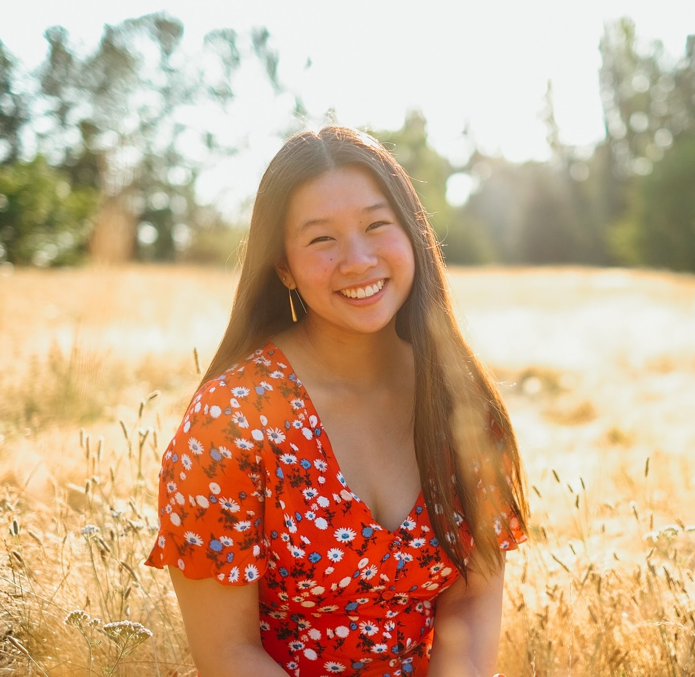
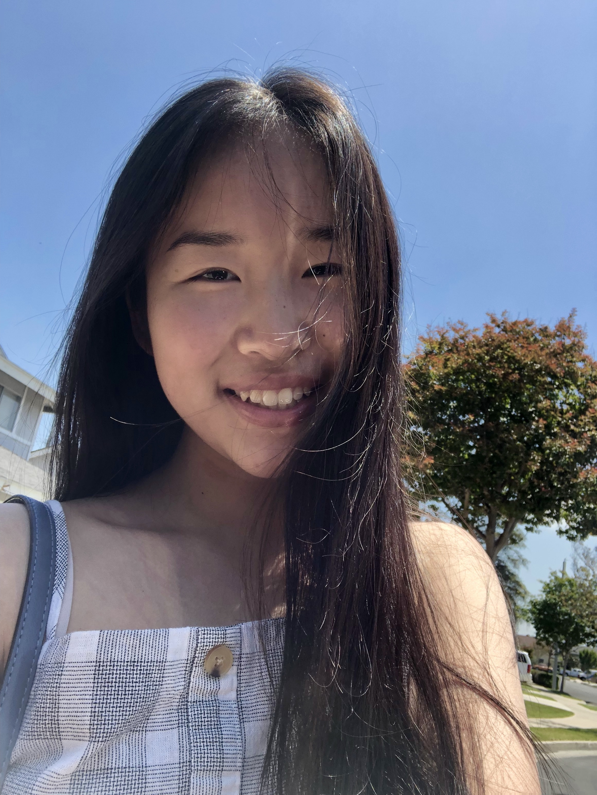
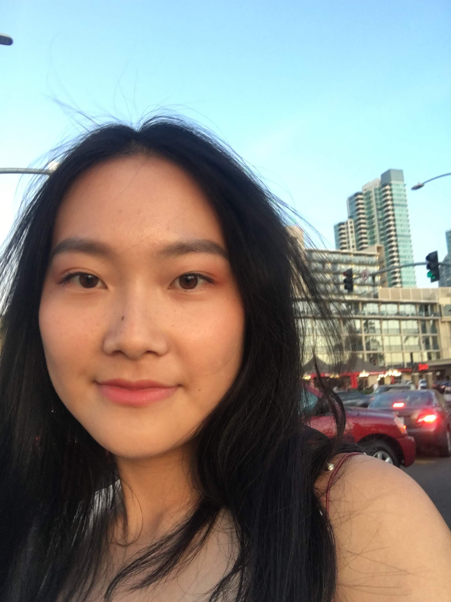

Alex S
Alex Soong is a rising high school senior at International School in Bellevue, WA, near Seattle. She loves coding, singing, and everything matcha. She has a huge heart for social justice and equity. Her favorite pastime is watching ATLA over and over again.
Anita L
Anita Liu is a freshman at UC Berkeley's Management, Entrepreneurship & Technology Program, studying Electrical Engineering & Computer Science and Business. She's a huge believer in the power of optimism, and enjoys dancing, reading, journaling, and meeting people.
Cyndi W
Cyndi Wu is an incoming freshman at GW who will be studying Business with a concentration in Information Systems and Technology Management. She resides on the west coast, where she sadly watches her neighbors walk by daily without masks on and waters her aloe vera plants.
We are a team of three that met through Kode With Klossy’s 2020 web development program. We are young women who sought opportunities to learn more about coding and to find a community of diverse underrepresented groups in STEM. Given the opportunity to explore our passions by creating and coding a website, we chose to tackle the subject of mental health. Our member, Alex S, specifically wanted to provide resources for everyone ranging from our community, Gen Z, to the often left out Millenial generation. rTime is a website dedicated specifically to providing specialized resources that pertain to mental and physical health during the 2020 pandemic. We wanted to remind those students and adults working from home that they should not downplay the impacts of quarantine on their physical and mental health. We hope that our website is able to provide the users, a safe space to feel heard and a gentle reminder to love and care for themselves too✨✨✨